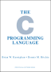

これが私のportfolio
まずは自己紹介から

- 名前：池神虎太朗
- 年齢:18歳
- 所属:大阪公立大学工業高等専門学校、3年知能情報コース
- 趣味:プラモデルやゲームプレイ、ゲーム制作
- 最近のうれしかったこと:高専祭にしっかりと役割をもって貢献できたこと
- 好きなもの:ゲーム、ゲーム作成etc...
まずは将来の夢から、ズバリ ゲームクリエイターです！
小学生ぐらいからぼんやりとゲームを作りたいなぁ
と思い続けて、気づけば高専に入学していましたね。
自分の目標を達成するために現在勉強中です！
最近(2025年8月)では初めて自分の作品を公開したり、着実に夢に近づいている気がします。

★★★★★
一番最初に習得したプログラミング言語です。
触れてきた時間も一番多いですし、
いくつかゲームも作ったことがあります。
まだまだ勉強中ですが、ほぼ使いこなせています。
2025年春では新しく機械学習について
勉強しました。


★★★☆☆
始めた当初はこのポートフォリオのために始めましたが
いろんなアニメーションなどを実装してみたり、ほかの
Webサイトを作ってみたりと上達してきています。
これからも学んでいきます。

★★★★☆
主に制作物をリポジトリにして管理しています。
また、リポジトリを管理するのみではなく、ブランチや
イシューなどのグループ開発に関する知識も増えました。
近頃はリポジトリも増えてきています。

★★★✦☆
まず上の4つ目の✦は0. 5という意味です。
星で半分だけ塗りつぶしたものがなかったので
✦で代用しました。
2025年の夏休みから勉強し始めて、同年の
高専祭ではunityを使用してポーカーを
作成しました。
現在では1つのプロジェクトを完成させる
ことができる程度の知識はありますし、複数の
プロジェクトを結合することもできるようになりました。
これから頑張って学習したいと考えています。

★★★★★
自主的に何かを作成するときはVScodeを利用しています。
仮想環境の構築、ファイルを分割したプログラムなど
VScodeを利用した開発ができます。
VScodeを利用して開発することも多く経験して
だいぶ成長できた気がします。
最近は動物が駆け回る拡張機能を入れて癒されてます。

★★★☆☆
pytonの次に学習しているプログラミング言語です。
繰り返しや条件分岐などの基本構文やライブラリの
インストール、ファイルの入出力などはできます。
基本的なことはできるのですがまだ学習時間や経験
が少ないのでもっと勉強を続けていきます。
★★★☆☆
まずluau言語とはlua言語をベースに制作されたプログラミング言語で、ロブロックススタジオに特化したものです。 ここでは、ロブロックススタジオに特化しているのでロブロックススタジオと並べて書きます。 まず、ロブロックススタジオは2025年の6月から勉強し始めて、今まで1つのプロジェクトを作成しました。 プロジェクトを完成させる程度の知識に加えて、プレース間の移動などもできるようになりました。 つぎにluau言語ですが、これもプロジェクトを完成させる程度の知識を会得しています。 サーバーとクライアントのスクリプトの違いなども理解しています。
C#

★★☆☆☆
C++はunityで使用するので学習を始めました。
基本的な構文はできますが、まだまだ勉強中ですし
使っている時間も少ないのでこれからもっと学習
していきます。

ドラクエを参考にしたターン制バトルを作りました。
(文章をクリックすると続きが表示されます)
授業でのpythonを使った自由課題の時に制作しました。
初めての成果物ですが自分の納得のいくまで作りこみました。
まだモジュールなどを使っていないので文字だけです。＞＜
以下はgithubのリポジトリのリンクです。
https://github.com/kotua510/DQlike-buttlegame

二年生の時の高専祭(文化祭)の制作物です。
discord.botというdiscordの拡張機能を用いて
discordの機能の拡張と、そのbotを投稿したり
ダウンロードすることができるwebサイトを製作しました。
(文章をクリックすると続きが表示されます)
プログラムを再起動しなくてもいつでも使用できるように
flaskサーバーなどを利用しました。
私はbotの作成、高専祭の際体験してもらう
discordサーバーを作成しました。
以下はgithubのリポジトリのリンクです。
(担当したdiscord.botのみ)
https://github.com/kotua510/discord.bot

マインスイーパーとターン制バトルを組み合わせた
ゲームを作ってみました。
(文章をクリックすると続きが表示されます)
制作期間は2024年 12月から 2025年 6月です。
今までは既存のターン制バトルを真似たもの
を作ってきましたが今回はオリジナルっぽいものを
作ってみたかったのでマインスイーパーと
ターン制バトルを掛け合わせたものを作りました。
こういった何かと何かを掛け合わせてゲームを作る経験は
初めてだったので戸惑いましたが、マインスイーパーの結果を
バトルの攻撃力や防御力に反映したり、バトルで
使用したらマインスイーパーが有利になる道具を
実装することによって上手く二つの要素を
掛け合わせることができたと思います。
2025年1月には一旦完成としていたのですが
タイトルやチュートリアル、BGMなどの要素を追加し、
ちゃんとしたゲーム作品として2025年7月にインターネット
に公開しました。 ダウンロードは以下のリポジトリもしくは
公開してくださっている みんなのゲームパレード から可能です。
もしプレイされる際はリポジトリに説明書があるので
それを読んでからプレイしたほうが快適かもしれません。
以下はみんなのゲームパレードでこの作品が公開されているページのURLです。
https://gameparade.creators-guild.com/works/3009
以下はgithubのリポジトリのURLです。
https://github.com/kotua510/minesweeper-battle


学校の課題や自主制作などで使える
プロジェクト管理アプリを作りました。
(文章をクリックすると続きが表示されます)
制作期間は2025年 2月で12時間ほどで制作しました。
制作した理由はいままで自分が何かを制作するときに
使っていたメモ帳アプリで不便だと感じていた部分を
解消しようと思い、今回のアプリを製作しました。
具体的にはカテゴリーごとの管理が従来のアプリでは
やりにくいと感じていました。
例えば、 機能の追加では○○をする、
バグの修正では△△をしたい、
というときに従来のアプリではスペースで区切ったり、
文字の大きさを変えて箇条書きにするしかなかったと
思うのですが、今回制作したアプリでは上の画像の通り、
「|」や「―」のような図形で表すことにより、
視覚的にわかりやすくすることができたと思います。
また、「☑」を使うことによってその作業が
終わっているかどうかを表すこともできます。
使い方はリポジトリにあるので使う際はぜひご覧ください。
以下はgithubのリポジトリのURLです。
https://github.com/kotua510/project_management
JavaScriptの基本構文や活用例をまとめた
制作期間は2025年 7月です。
JavaScriptはまだ学習していなかったので、予習として
Webサイトです。
(文章をクリックすると続きが表示されます)
作成しました。 自分で調べながら基本構文などの技術面や
活用されているものなどの知識面など、多くの視点から
JavaScriptについて知ることができたので良かったと思います。
このWebサイトにはHTML及びCSSを使用しています。
以下はJavaScriptを紹介したWebサイトのURLです。
https://kotua510.github.io/JS_Explanation/
unityについて紹介したスライドショーを
制作期間は2025年 8月です。
unityを勉強し始めていたのと、canvaを使ってみたいという
気持ちがあったのでcanvaのスライドショーでunityを紹介しました。
canvaについてはスライドのデザインテンプレートを使用したり、
画像素材の管理、要素のグループ化などcanva特有の機能を使用できたと思います。
スライドショーのみで完結する形にしたので文字数は多くなってしまいましたが
unityの魅力を伝えられたかと思います。
unityについては自分が使ってみてすごく便利だと思った機能をメインに、
unityがどんなに使われているかを紹介しています。
これを作成して改めてunityのすごさが分かりました。
作成しました。
(文章をクリックすると続きが表示されます)
以下にunityを紹介したスライドショーのUPLを記載します。
https://www.canva.com/design/DAGvZUO2z_o/pAbC8x6cphF-AoOJ-OTL0A/edit
next.jsやtsなどを使用したtodoアプリを
制作期間は2025年 10月~11月です。
主に自分が使用する目的で作成したので、自分が欲しいと
思った機能を全て実装しました。 タスクにメモを残せるようにしたり
細分化したタスクを追加できるようにしました。 特に細分化はこだわりポイントで、
細分化してステップを踏めるようにしてモチベーションを維持できるようにしました。
またタスクを達成するごとに経験値を入手できるようにして、レベルがどんどん上がっていくようにしました。
これによってユーザーのモチベーションを維持することが
できると考えましたし、実際私のモチベーションは上がりました。
作成しました。
(文章をクリックすると続きが表示されます)
以下にnext.jsやtsなどを使用したtodoアプリのURLを記載します。
https://kotua510.github.io/react-todo-app/
また、以下にnext.jsやtsなどを使用したtodoアプリのgithubリポジトリのURLを記載します。
リポジトリにはさらに細かい機能の説明やコンセプトなどを記載しています。 ご一読ください
https://github.com/kotua510/react-todo-app?tab=readme-ov-file
1人でボールを弾くロブロックスのゲームを
制作期間は2025年 9月です。
ロブロックスで公大高専を題材にした場所(体育館や教室など)でそれぞれゲームを作る
というチームプロジェクトで作成しました。
ゲームの内容は浮かんでいるボールを弾き続けるというシンプルなものですが、体育館に配置したキャラのセリフや
隠し要素などこだわれるところはこだわりました。 特にダッシュやボールの弾き方など、ゲームの説明をホワイトボードに書くことによって
自然と体育館という場所に落とし込んだのはこだわりポイントです。
作成しました。
(文章をクリックすると続きが表示されます)
以下は1人でボールを弾くロブロックスのゲームのURLです。
以下のURLのページにある▶のボタンを押せばプレイできます。
https://www.roblox.com/ja/games/85998192600100/unnamed
2Dアクションゲームを
制作期間は2025年 3月からです。
かなりの期間開発しているように見えますが、間に多くのプロジェクトの開発がしていたので実際は3か月ぐらいだと思います。
この作品は「unity」などのゲームエンジンを使用していません。 なので物理演算を自分で実装しました、いろいろ調べて頑張って実装したので
かなり頑張ったポイントです。 また、時間を通貨として使うというアイデアによって独特なゲーム体験を作ることができたと思います。
また、このゲームのイラストは全て自分でデザインしたので、その点も頑張ったポイントです。
まだ、提出していませんがみんなのゲームパレードに提出する予定です。
作成しました。
(文章をクリックすると続きが表示されます)
https://www.roblox.com/ja/games/85998192600100/unnamed